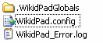

parent nodes: CommandLineSupport | HtmlCss | ProgramFiles | UserFiles | WikidPadFiles | WikidPadOnUSB
Configuration Files
Contents:
Back
General
Presently there is only one application configuration file: it's name is "WikidPad.config" and it's default location is in the WikidPad directory in the user profile. On windows that would be someplace like:C:\Documents and Settings\ user name \Application Data\WikidPad

It is however also possible, to move it to the WikidPad program directory; this to suport running WikidPad from a USB device.
Startup
On startup WikidPad searches for "WikidPad.config" in the following locations and in the order specified:
The WikidPad program directory
if found there, this becomes the configuration directory.
The "environment variables" are searched for the variable "home"
if found, it's value is used for the configuration directory.on Windows, open a console (= Dos-Box) and type the command "set" to list all environment variables.
The operating system is asked for the "user profile" directory
if received, the subdirectory "WikidPad" in the profile becomes the configuration directory.if it does not exist, a new directory is created and initialised.this is mainly intended for windows operating systems.
Where is it
You can find out where the configuration directory is, by starting WikidPad and selecting "Help / About" in the main menu. This will bring up the "About" dialog. In it, the configuration directory in use is specified at the bottom of the text, together with the database type of the current wiki.
Top
previous: Back
parents: CommandLineSupport, HtmlCss, ProgramFiles, UserFiles, WikidPadFiles, WikidPadOnUSB
[help.status: done]